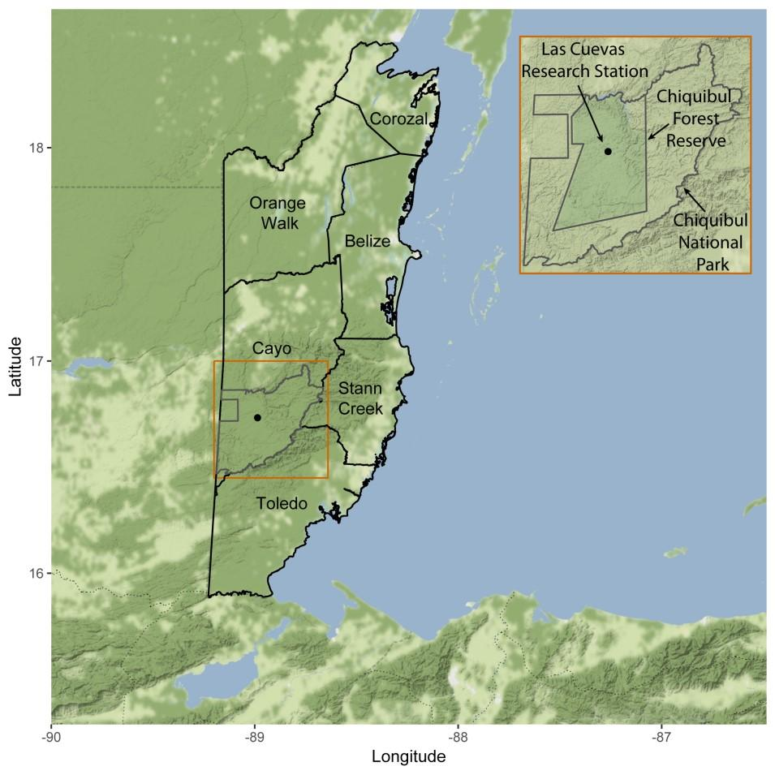

Epiphytes of Las Cuevas Research Station, Cayo District, BELIZE
Bruce K. Holst, Sally Chambers, Antone Jones, David Amaya, Ella Baron, Marvin Paredes, Sayuri Tzul
{{message.nombre}}

Las Cuevas Research
Station (LCRS) is located at the northern portion of
Belize's Maya Mountains
and in the heart of Chiquibul Forest Reserve.
Since 1994 LCRS has promoted biological, botanical, wildlife, climatic, and archaeological research and education. This
unique setting provides a range of opportunities for researchers, naturalists, environmentalists, and
students to enjoy nature and conduct biodiversity research. LCRS is co-managed by Friends for
Conservation and Development and the Government of Belize.
The Chiquibul Forest represents nearly 8% of the Belize's terrestrial surface and is part of the trinational Maya Forest bioregion forming the largest remaining contiguous block of tropical forest
north of the Amazon.
The following epiphytic species are reported from Las Cuevas, but photos are not available: Campyloneurum fasciale, Lycaste
sp., Nephrolepis pendula, Polypodium hispidulum, Rhetinantha sp., Scaphyglottis sp.
The authors appreciate the help of the Las Cuevas Research Station staff and the
Friends of Conservation and Development, Belize, for logistical support.